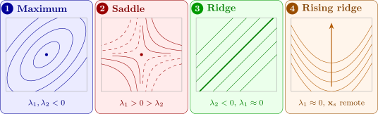

10.4 Polynomial models in two or more variables
With two regressors, the second-order model is \[ y = \beta _0 + \beta _1x_1 + \beta _2x_2 + \beta _{11}x_1^2 + \beta _{22}x_2^2 + \beta _{12}x_1x_2 + \varepsilon , \] and with \(k\) regressors it has the \(k\) linear terms, the \(k\) pure quadratic terms and the \(k(k - 1)/2\) cross-products. The cross-product \(x_1x_2\) is an interaction, as in Section 9: the effect of \(x_1\) depends on the level of \(x_2\). Such a model describes a curved response surface, and it is the basis of response surface methodology, in which an industrial process is moved towards the settings of its variables that give the best response. The variables are usually coded, \(x_j = (\xi _j - c_j)/d_j\) for natural variable \(\xi _j\), so that the design points are at \(\pm 1\) and \(0\).
In matrix form the fitted second-order model is \[ \hat y = \hat \beta _0 + \mathbf {x}^\top \mathbf {b} + \mathbf {x}^\top \mathbf {B}\mathbf {x} , \] where \(\mathbf {b} = (\hat \beta _1, \dots , \hat \beta _k)^\top \) and \(\mathbf {B}\) is the symmetric \(k \times k\) matrix with \(\hat \beta _{jj}\) on the diagonal and \(\frac 12\hat \beta _{jl}\) in positions \((j, l)\) and \((l, j)\). (For \(k = 2\), \(\mathbf {x}^\top \mathbf {Bx} = \hat \beta _{11}x_1^2 + \hat \beta _{22}x_2^2 + \hat \beta _{12}x_1x_2\).)
Theorem 10.4.1 (Stationary point and canonical form). If \(\mathbf {B}\) is non-singular, the fitted surface has a single stationary point, \[ \mathbf {x}_s = -\tfrac 12\mathbf {B}^{-1}\mathbf {b} , \qquad \hat y_s = \hat \beta _0 + \tfrac 12\mathbf {x}_s^\top \mathbf {b} . \] Let \(\mathbf {B} = \mathbf {P}\boldsymbol \Lambda \mathbf {P}^\top \) with \(\mathbf {P}\) orthogonal and \(\boldsymbol \Lambda = \operatorname {diag}(\lambda _1, \dots , \lambda _k)\), and let \(\mathbf {w} = \mathbf {P}^\top (\mathbf {x} - \mathbf {x}_s)\). Then \[ \hat y = \hat y_s + \lambda _1w_1^2 + \dots + \lambda _kw_k^2 . \] The stationary point is a maximum if every \(\lambda _i < 0\), a minimum if every \(\lambda _i > 0\), and a saddle point if the \(\lambda _i\) have both signs.
Proof. The gradient of \(\hat y\) is \(\mathbf {b} + 2\mathbf {Bx}\), which is zero only at \(\mathbf {x}_s\). Write \(\mathbf {x} = \mathbf {x}_s + \mathbf {z}\). Then \[ \hat y = \hat \beta _0 + \mathbf {x}_s^\top \mathbf {b} + \mathbf {x}_s^\top \mathbf {Bx}_s + \mathbf {z}^\top (\mathbf {b} + 2\mathbf {Bx}_s) + \mathbf {z}^\top \mathbf {Bz} . \] The middle term is zero, and \(\mathbf {Bx}_s = -\frac 12\mathbf {b}\) turns the constant into \(\hat \beta _0 + \mathbf {x}_s^\top \mathbf {b} - \frac 12\mathbf {x}_s^\top \mathbf {b} = \hat y_s\). With \(\mathbf {w} = \mathbf {P}^\top \mathbf {z}\), so \(\mathbf {z} = \mathbf {Pw}\), \(\mathbf {z}^\top \mathbf {Bz} = \mathbf {w}^\top \mathbf {P}^\top \mathbf {P}\boldsymbol \Lambda \mathbf {P}^\top \mathbf {P}\mathbf {w} = \mathbf {w}^\top \boldsymbol \Lambda \mathbf {w} = \sum \lambda _iw_i^2\). If every \(\lambda _i < 0\), then \(\hat y < \hat y_s\) for every \(\mathbf {w} \ne \mathbf {0}\), a maximum; similarly for a minimum. If \(\lambda _1 > 0 > \lambda _2\), then \(\hat y\) rises from \(\hat y_s\) along the \(w_1\) axis and falls along the \(w_2\) axis. □
The \(w_i\) are the canonical variables: new axes, centred at \(\mathbf {x}_s\) and along the eigenvectors of \(\mathbf {B}\). The eigenvalues say how fast the response changes along each axis. A \(\lambda _i\) near zero means the surface is nearly flat along \(w_i\), a ridge: many combinations of the variables give almost the best response, which in practice is useful, since the cheapest of them can be chosen. If the stationary point lies far outside the region of the data, it is an extrapolation and should not be trusted (consideration (3)). Figure 22 shows the main shapes.

Example 10.4.2. The yield \(y\) (%) of a chemical process was measured at the nine combinations of three temperatures and three reaction times, coded as \(x_1 = (\text {temperature} - 150)/10\) in \(^\circ \)C and \(x_2 = (\text {time} - 60)/15\) in minutes, so that each coded variable takes the values \(-1, 0, 1\). The yields were:
| \(x_2 = -1\) | \(x_2 = 0\) | \(x_2 = 1\) | |
| \(x_1 = -1\) | 72 | 74 | 63 |
| \(x_1 = 0\) | 72 | 80 | 78 |
| \(x_1 = 1\) | 65 | 76 | 80 |
Fit the second-order model, test it, and find and describe the stationary point.
Solution. Fitting. On this \(3 \times 3\) grid, replace \(x_j^2\) by \(q_j = 3x_j^2 - 2\), which takes the values \(1, -2, 1\) at \(x_j = -1, 0, 1\) (the quadratic orthogonal polynomial for three levels). Every one of the columns \(\mathbf {1}, \mathbf {x}_1, \mathbf {x}_2, \mathbf {x}_1\mathbf {x}_2, \mathbf {q}_1, \mathbf {q}_2\) sums to zero except the first, and every product of two of them sums to zero over the grid. For example, \(\sum q_1q_2 = (1 - 2 + 1)^2 = 0\), and \(\sum x_1q_1 = 3(-1 + 0 + 1) = 0\). By Theorem 10.2.1, each coefficient is a ratio of sums. The row totals are \(209, 230, 221\) and the column totals are \(209, 230, 221\), so \begin {gather*} \textstyle \sum x_1y = 221 - 209 = 12, \qquad \sum x_2y = 221 - 209 = 12, \\ \textstyle \sum x_1x_2y = (80 + 72) - (63 + 65) = 24, \\ \textstyle \sum q_1y = \sum q_2y = 209 + 221 - 2(230) = -30 . \end {gather*} The sums of squares of the columns are \(6, 6, 4, 18, 18\), so \[ \hat \beta _1 = \frac {12}{6} = 2, \quad \hat \beta _2 = 2, \quad \hat \beta _{12} = \frac {24}{4} = 6 , \] and the coefficient of each \(q_j\) is \(-30/18 = -\frac 53\). Since \(q_j = 3x_j^2 - 2\), a coefficient \(-\frac 53\) on \(q_j\) is \(\hat \beta _{jj} = 3(-\frac 53) = -5\) on \(x_j^2\), plus a constant \((-\frac 53)(-2) = \frac {10}{3}\). With \(\bar y = 660/9 = 73.333\), the intercept is \(\hat \beta _0 = 73.333 + \frac {10}{3} + \frac {10}{3} = 80\), and \[ \hat y = 80 + 2x_1 + 2x_2 - 5x_1^2 - 5x_2^2 + 6x_1x_2 . \]
Testing. The fitted values are \(72, 73, 64\); \(73, 80, 77\); \(64, 77, 80\) (row by row), so the residuals are \(0, 1, -1\); \(-1, 0, 1\); \(1, -1, 0\), and \(SS_{\mathrm {Res}} = 6\) on \(9 - 6 = 3\) degrees of freedom: \(MS_{\mathrm {Res}} = 2\). By Theorem 10.2.1(iii), \begin {align*} SS_R &= \frac {12^2}{6} + \frac {12^2}{6} + \frac {24^2}{4} + \frac {30^2}{18} + \frac {30^2}{18} \\ &= 24 + 24 + 144 + 50 + 50 = 292 \end {align*}
on \(5\) degrees of freedom, so \(F_0 = (292/5)/2 = 29.2 > F_{0.05,5,3} = 9.01\). The standard errors are \(\sqrt {2/6} = 0.577\) for \(\hat \beta _1, \hat \beta _2\), \(\sqrt {2/4} = 0.707\) for \(\hat \beta _{12}\), and \(3\sqrt {2/18} = 1\) for \(\hat \beta _{11}, \hat \beta _{22}\), giving \(t\) values \(3.46\), \(3.46\), \(8.49\), \(-5\) and \(-5\), all beyond \(t_{0.025,3} = 3.182\). Every term is needed.
The stationary point. Here \(\mathbf {b} = (2, 2)^\top \) and \[ \mathbf {B} = \begin {pmatrix} -5 & 3 \\ 3 & -5 \end {pmatrix}, \qquad \mathbf {B}^{-1} = \frac {1}{16}\begin {pmatrix} -5 & -3 \\ -3 & -5 \end {pmatrix} . \] By Theorem 10.4.1, \begin {align*} \mathbf {x}_s &= -\frac 12\cdot \frac {1}{16}\begin {pmatrix} -16 \\ -16 \end {pmatrix} = \begin {pmatrix} 0.5 \\ 0.5 \end {pmatrix} , \\ \hat y_s &= 80 + \tfrac 12(0.5 \times 2 + 0.5 \times 2) = 81 . \end {align*}
As a check, \(\hat y\) at \((0.5, 0.5)\) is \(80 + 1 + 1 - 1.25 - 1.25 + 1.5 = 81\). The eigenvalues of \(\mathbf {B}\) are \(-5 + 3 = -2\), with eigenvector \((1, 1)/\sqrt 2\), and \(-5 - 3 = -8\), with eigenvector \((1, -1)/\sqrt 2\). So \[ \hat y = 81 - 2w_1^2 - 8w_2^2 , \] where \[ w_1 = \frac {(x_1 - 0.5) + (x_2 - 0.5)}{\sqrt 2}, \qquad w_2 = \frac {(x_1 - 0.5) - (x_2 - 0.5)}{\sqrt 2} . \] Both eigenvalues are negative, so the stationary point is a maximum, inside the region of the data: a temperature of \(150 + 0.5(10) = 155\,^\circ \)C and a time of \(60 + 0.5(15) = 67.5\) minutes, with predicted yield \(81\%\). The contours are ellipses with their long axis along \(w_1\), the direction in which temperature and time rise together. The yield falls four times as fast along \(w_2\) as along \(w_1\), so if the process must be run at a different setting, it should be moved along the diagonal, raising or lowering temperature and time together, not one without the other.
Questions on this section
Stuck on something here? Ask below and it stays attached to this topic.